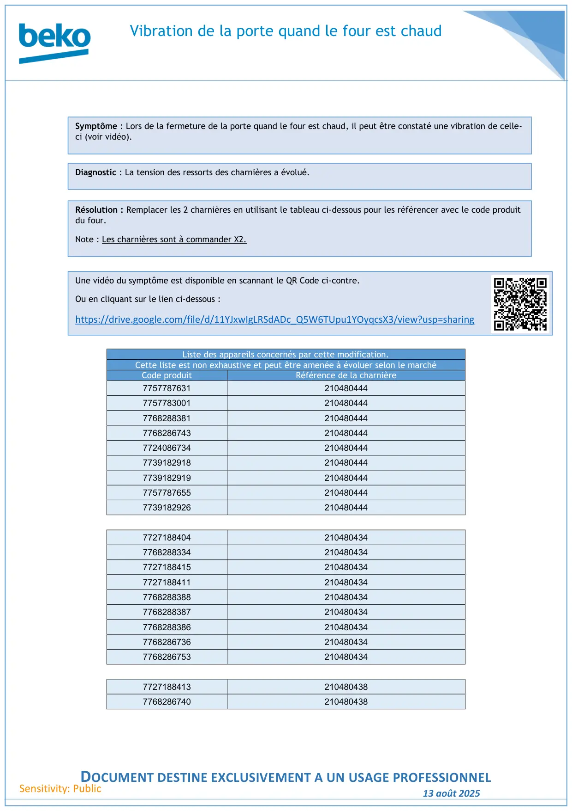

Porte four Beyond Prologue vibre

Vibration de la porte quand le four est chaudDOCUMENT DESTINE EXCLUSIVEMENT A UN USAGE PROFESSIONNEL13 août 2025Sensitivity: PublicListe des appareils concernés par cette modification.Cette liste est non exhaustive et peut être amenée à évoluer selon le marchéCode produitRéférence de la charnière77577876312104804447757783001210480444776828838121048044477682867432104804447724086734210480444773918291821048044477391829192104804447757787655210480444773918292621048044477271884042104804347768288334210480434772718841521048043477271884112104804347768288388210480434776828838721048043477682883862104804347768286736210480434776828675321048043477271884132104804387768286740210480438Symptôme : Lors de la fermeture de la porte quand le four est chaud, il peut être constaté une vibration de celle-ci (voir vidéo).Diagnostic : La tension des ressorts des charnières a évolué.Résolution : Remplacer les 2 charnières en utilisant le tableau ci-dessous pour les référencer avec le code produitdu four.Note : Les charnières sont à commander X2.Une vidéo du symptôme est disponible en scannant le QR Code ci-contre.Ou en cliquant sur le lien ci-dessous :https://drive.google.com/file/d/11YJxwIgLRSdADc_Q5W6TUpu1YOyqcsX3/view?usp=sharing
1 / 1